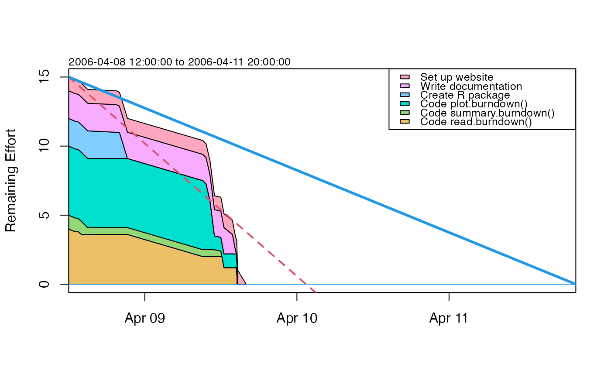

Plot a burndown chart.
# S4 method for burndown
plot(
x,
col = NULL,
draw.plan = TRUE,
draw.regression = TRUE,
draw.lastupdate = FALSE,
t.stop = "",
y.name = "Remaining Effort",
debug = FALSE,
...
)A burndown object.
list of colours for items, starting with the first key in the
file (which will be at the bottom of the chart). If not specified, the
hcl() scheme will be used, to generate colours that are
distinct, that show up reasonably well on a monitor.
boolean, set to TRUE to draw the plan, as a
descending line with a horizontal intercept.
boolean, set to TRUE to draw a regression line
of actual overall progress.
boolean, set to TRUE to draw the last update
(which otherwise requires a sharp eye).
a POSIX time, the maximum time for graph (defaults to deadline if not given).
character string, for labelling the vertical axis.
boolean, set to TRUE to monitor the work.
extra things handed down to plotting functions.
Other things related to burndown data:
as.burndown(),
burndown-class,
burndown,
read.burndown(),
summary,burndown-method
library(plan)
data(burndown)
summary(burndown)
#> Start, 2006-04-08 12:00:00
#> Deadline, 2006-04-11 20:00:00
#> Key, Description, Effort
#> 1, Code read.burndown(), 4
#> 2, Code summary.burndown(), 1
#> 3, Code plot.burndown(), 5
#> 4, Create R package, 2
#> 5, Write documentation, 2
#> 6, Set up website, 1
#> Key, Done, Time
#> 1, 5, 2006-04-08 13:00:00
#> 2, 5, 2006-04-08 13:30:00
#> 1, 10, 2006-04-08 14:00:00
#> 2, 50, 2006-04-08 15:00:00
#> 4, 5, 2006-04-08 19:30:00
#> 5, 5, 2006-04-08 20:00:00
#> 4, 100, 2006-04-08 21:16:00
#> 1, 50, 2006-04-09 09:10:00
#> 3, 5, 2006-04-09 09:41:00
#> 3, 30, 2006-04-09 10:18:00
#> 3, 80, 2006-04-09 11:00:00
#> 2, 60, 2006-04-09 12:00:00
#> 2, 100, 2006-04-09 12:10:00
#> 1, 70, 2006-04-09 12:30:00
#> 5, 30, 2006-04-09 13:50:00
#> 5, 90, 2006-04-09 14:20:00
#> 5, 100, 2006-04-09 14:30:00
#> 1, 100, 2006-04-09 14:35:00
#> 3, 100, 2006-04-09 14:40:00
#> 6, 100, 2006-04-09 16:00:00
plot(burndown)
